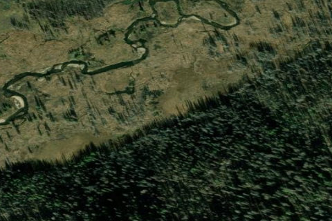

SULPHUR CREEK RANCH
ID74 · ID

Aerial imagery source: Esri, Vantor, Earthstar Geographics, and the GIS User Community
| Identifier | ID74 |
|---|---|
| State | ID |
| Runway length | 3,300 ft |
| Runway width | 40 ft |
| Surface | GRVL-TURF |
| Runway | 10/28 |
| Elevation | 5,835 ft |
| Ownership | private |
| CTAF | 122.9 |
| Coordinates | 44.53656972, -115.35094083 |
Notes
[idaho_itd] Private Airfield [shortfield] Location Overview Sulphur Creek Ranch (ID74) sits on the southwestern corner of the Frank Church–River of No Return Wilderness, one of the largest roadless areas in the lower 48. The strip lies about 50 miles east of Cascade at an elevation of roughly 5,835 feet MSL. Despite its remote setting, it's only about a 45-minute flight from Boise. The 3,300-foot gravel and turf runway (facility ID74) sits on 160 acres of private ranchland, and while privately owned, pilots and visitors have traditionally been welcome. The ranch is generally open from early June through October with no landing fees. The surrounding landscape is quintessential central Idaho — dense conifer forests, the Middle Fork of the Salmon River corridor, and dramatic mountain ridgelines in every direction. Operational Notes & Warnings Landings are made uphill on Runway 26 — most pilots call it "upstream" or "to the west" — and takeoffs are made downhill on Runway 8, to the east. Pilots should report on CTAF 122.9. No straight-in approaches are permitted; pilots should overfly the runway before landing, as livestock, heavy equipment, or wildlife may be present on or near the strip. A proper left downwind with a base leg past the knob ridge to the east is recommended to allow adequate time to set up for final. The west end of the runway has loose gravel, so prop blast is a concern. Experienced backcountry pilots check winds aloft at 9,000 feet and generally hold off if winds exceed 25 knots. Morning flying is preferred, before heat-induced turbulence and density altitude become factors. There's also a fence just before the runway threshold, so dragging it in is inadvisable — and the mountain at the west end makes a go-around a poor option as well. Current status note: Following the 2021 Boundary Fire, the airstrip was closed to general fly-in traffic, with the ranch shifting to a limited group and hunting model. Pilots should verify current operational status directly with the ranch before planning a flight. History Sulphur Creek Ranch has deep roots as a working Idaho backcountry operation, having served miners, geologists, loggers, sportsmen, horsemen, hikers, and pilots for over many decades. Over the years it grew into what AOPA called Idaho's most popular fly-in destination — famous for its weekend cowboy breakfasts and the community of backcountry pilots that gathered there. The surrounding forest was designated a federal Wilderness Area in 1980, cementing the ranch's identity as a rare private enclave inside one of America's wildest landscapes. In 2021, the Boundary Fire burned through more than 90,000 acres of the Middle Fork drainage, threatening the ranch for nine straight weeks. All the structures survived, but the surrounding forest was devastated, forcing the managers to close the ranch to general public fly-ins for 2022 and beyond, marking a significant turning point in the airstrip's long history as a community gathering place.